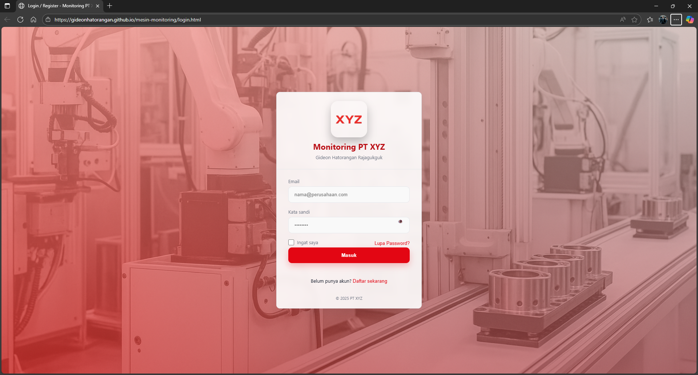

Portal Login
Halaman login dengan branding PT XYZ untuk autentikasi pengguna monitoring.
Memuat 0%
Halaman login dengan branding PT XYZ untuk autentikasi pengguna monitoring.
Tampilan ringkasan OEE, output, downtime, dan utilitas dengan aksi refresh/reset shift.
Inventori realtime untuk status mesin milling dan lathe, lengkap dengan filter dan kontrol data.
Modal detail dengan metrik cycle time, temperatur, availability, dan jadwal maintenance.
Grafik OEE per jam beserta log masalah dengan opsi ekspor CSV/PDF untuk analisis harian.
Daftar peringatan real-time untuk downtime, kondisi kritis, dan prioritas tindak lanjut.